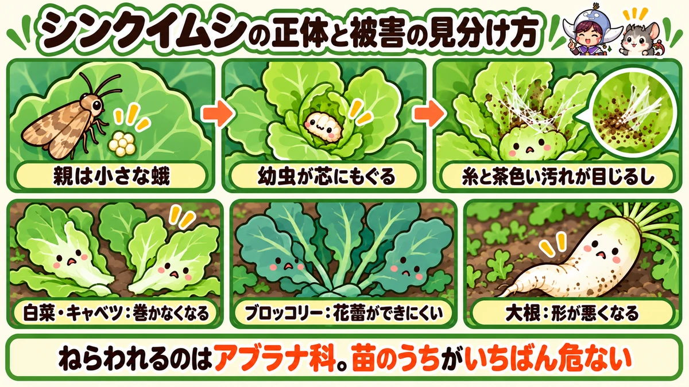
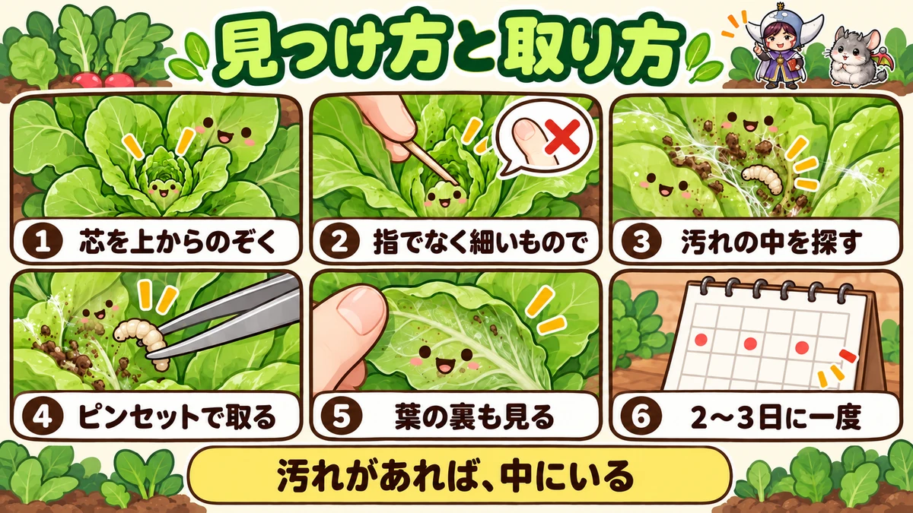

Caterpillars eating brassica hearts 🥬 Find them early and keep them out
🥬 "The middle of my cabbage seedling is brown and dirty, and no new leaves are coming."
🥬 "My daikon's outside leaves look healthy, but the tiny shoot in the centre has gone."
🥬 "I put insect mesh over the bed, so how did a caterpillar get inside?"
Hello, I'm Eiko. Eight years of growing vegetables organically and without pesticides, and a teaching licence in science.
A young autumn vegetable can look well from a distance while a small caterpillar is eating its most important part. The target is the growing point: the cluster of new leaves in the centre. Damage here is different from a few holes in the outside leaves. Chinese cabbage and cabbage may never form heads, broccoli may fail to produce its central head, and daikon can grow into an awkward shape.
This guide explains the signs, gentle removal and prevention. If seedlings are already damaged, start with finding and removing the larva. Before sowing or planting, prepare the covers first.
Where you are: this article describes the moth called haimadara-no-meiga in Japan and its larvae in brassica crops; similar damage elsewhere needs identification of the pest in your own garden. Chinese cabbage means the heading type, also called napa cabbage; daikon is the long white radish. Non-woven horticultural fleece is the floating row cover used here, and insect mesh is a physical barrier over hoops. Months and seasonal timing are for central Japan; adapt them to your local autumn sowing window and the arrival of cold weather.
The essentials: look into the centre, not just at the outside leaves. Silk mixed with brown or beige droppings is the clue. Use a toothpick or tweezers gently, remove larvae, and inspect neighbouring plants. Cover on the day you sow or plant, seal the edges, keep foliage clear of the mesh, and check the growing points every two to three days while plants are small.
① The pest at a glance
- What it is: the larva of a small moth, rather than a disease of the seedling
- Its targets: Chinese cabbage, cabbage, broccoli, cauliflower, daikon, turnips and other brassicas
- Its season: late summer into autumn, when autumn and winter crops are sown or transplanted; numbers fall as the weather becomes cold
- Its damage: the growing point is eaten, new leaves stop appearing, heads fail to form and badly damaged seedlings may die
- The clue: threads of silk and brownish material mixed with droppings in the heart
- The main prevention: insect mesh or fleece immediately after sowing or planting, sound seedlings and frequent checks of their centres

What this diagram says （図解の文字）
- The heart-eating caterpillar: what it is and how to recognise the damage
- "The parent is a small moth" / "The larva burrows into the heart" / "Silk and brown dirt are the clues"
- "Chinese cabbage and cabbage: heads fail to form" / "Broccoli: the flower head forms poorly" / "Daikon: the shape becomes poor"
- "Brassicas are the target. The seedling stage is the most dangerous"
② A caterpillar that hides in the heart
It eats where new leaves are made
The heart is the growing point, where fresh leaves emerge. Unlike caterpillars that stay on the outside leaves and make visible holes, this pest moves into the centre and feeds out of sight. Outside leaves may look healthy while the centre is damaged.
The adult is a small moth
The moth lays eggs on leaves. After hatching, the tiny larvae move towards the growing point. Newly hatched larvae are pale, whitish or beige, and very easy to overlook among the folded leaves. Even as they grow, they remain fairly small.
A moth can spread eggs among many plants
An adult lays many eggs over its life, a few at a time on plant after plant. Damage can spread across a small patch quickly, so finding one larva is a reason to inspect the rest.
Silk makes a hidden shelter
The larva spins threads around the tender centre, drawing leaves together into a small, cocoon-like or cottony shelter. It feeds while hidden inside. Droppings become mixed into the silk, so the material looks brownish or beige rather than clean white. This dirty webbing is often easier to see than the animal itself.
③ What happens to the crop
Growth stops at the centre
When the growing point is eaten, the plant cannot keep making new leaves there. Side shoots sometimes begin to grow instead, but the plant does not readily return to the shape and vigour it would have had with an intact centre.
Chinese cabbage and cabbage may not head
These crops need their central growth to build a head. A lost heart often means that no proper head forms. Once leaves start folding together, a larva inside is harder to find and harder to reach, so check carefully before the centre becomes enclosed.
Broccoli and cauliflower may not make a good head
Damage to the growing point can prevent the central flower head developing properly. Both crops need protection while young. Their increasing height also matters when choosing hoops: a tunnel that fits a small transplant may later leave foliage pressed against its roof.
Daikon can sometimes keep growing
Daikon does not have to form a leafy head. If only part of the growing point is damaged, fresh shoots may appear and growth may continue after the larva has been removed. The root can nevertheless become misshapen. There is a reason to watch a partially damaged daikon rather than automatically treating it like a cabbage with its whole heart destroyed.
Very small plants can die
A severe attack while the seedling is tiny can kill the entire plant. The interval after sowing or transplanting is therefore the time to pay closest attention. Autumn and winter vegetables also have less opportunity to replace lost growth as the season cools.
④ Finding the hidden larva
Look down from above
Find the spot in the centre where fresh leaves should be emerging. Healthy young leaves there should look tender, clean and yellow-green. Look for white threads, cottony material, brown or beige deposits, wilted or browned heart leaves, or a centre that has simply stopped making new leaves.
Silk and droppings together are a strong reason to keep searching. A tiny larva can hide between overlapping leaves or blend into its droppings. Keep looking even if nothing moves at first.
Use a narrow tool gently
A toothpick, tweezers, the tip of chopsticks or a soft toothbrush lets you move one little leaf at a time. Fingers are too blunt for opening the tender centre safely. Pulling the heart wide with your fingers can injure the growing point even if you succeed in finding the pest.
Check the undersides too
Before entering the centre, a larva may be on the underside of a leaf. On Chinese cabbage and cabbage, inspect underneath the outside leaves and between leaves as well as in the growing point. These checks also reveal other pests that share the bed.
Compare the pattern with other insects
- This heart-eating larva: silk and droppings in the growing point, with a small pale caterpillar concealed inside
- Cabbage white caterpillars: green caterpillars making holes in outside leaves, often with green droppings on the leaves
- Night-feeding caterpillars: leaves eaten overnight, with caterpillars hiding in the soil near the plant during the day
- Flea beetles and related leaf beetles: many small holes from tiny beetles; some also scar the surface of daikon roots

What this diagram says （図解の文字）
- How to find and remove it
- "1. Look into the heart from above" / "2. Use something narrow, not your fingers" / "3. Search inside the dirt"
- "4. Remove it with tweezers" / "5. Look under the leaves too" / "6. Every two to three days"
- "If there is dirt, it is inside"
⑤ What to do when you find one
Remove it and check beyond that plant
Lift the larva out with tweezers and squash it. Newly hatched larvae can be so small that lifting away the dirty silk with them is easier than trying to separate each tiny body first. Having removed one, inspect the same plant again and then check its neighbours.
- Look down into each centre and find the plants with silk or brown deposits.
- Use a toothpick or the tip of chopsticks to ease apart the leaves around the heart.
- Search inside the dirty material and in the narrow spaces between leaves.
- Lift the larva out with tweezers and squash it.
- Gently remove remaining silk and droppings from the heart.
- Look under the leaves of the same plant and into neighbouring hearts.
Decide whether the plant can still give a crop
A Chinese cabbage or cabbage whose growing point has gone often will not make a head. If the local sowing or planting window is still open, replacing it can give a better chance of a harvest than waiting for it to recover. If it is too late, growing the side shoots for edible leaves is another way to use it.
For daikon with part of the growing point still present, remove the pest and watch for new shoots. Because it does not need to form a cabbage-like head, some damage can be recoverable.
Keep a few spare seedlings
If you raise Chinese cabbage or cabbage yourself, raise a little more than the exact number you intend to plant. Spare seedlings let you replace an early casualty without starting again from seed. That matters in autumn, when a delay leaves less growing time before the cold arrives.
If you choose a pesticide
Products used against this pest include granules at sowing or planting and sprays diluted with water. Use only a product whose local label covers the crop and pest, and follow its timing, number of applications and amount. A spray applied from outside may not reach a larva deep inside the heart. Early action, before it is hidden, matters more than repeatedly wetting an already occupied centre.
⑥ Prevention starts on sowing or planting day
1. Keep the adult moth away
The main defence is stopping the moth laying eggs on the crop. Cover the bed on the day you sow or plant. Put insect mesh over tunnel hoops and close its lower edges with soil or suitable fastenings. Leave no easy entrance at the sides or ends.
Comparisons described for covered and uncovered daikon have found much less pest damage and noticeably better growth under mesh. Mesh is not a complete guarantee, but the physical barrier makes a large difference.
2. Leave room between leaves and mesh
If leaves press against the mesh, an adult outside may lay eggs there and tiny newly hatched larvae may pass through. Leave space for the crop to grow without touching the cover.
Broccoli can outgrow low hoops. Use higher supports or consider a finer mesh, while remembering that finer mesh also affects ventilation.
3. Use fleece for directly sown crops
For daikon and turnips, lay non-woven horticultural fleece loosely over the bed immediately after sowing. This floating cover needs no hoops at first. As well as keeping insects away, it reduces drying and helps seedlings emerge evenly; in cold weather it also holds warmth. When seedlings lift it, move it onto hoops or change to insect mesh.
4. Inspect seedlings before covering them
Purchased seedlings may already carry eggs or larvae. Check the heart for silk and deposits and leaf undersides for eggs or insects. Check your own seedlings too, so you do not enclose pests with their food.
5. Check every two to three days while small
Even covered seedlings deserve a look into their hearts. Finding a larva when it is tiny limits damage. Some gardeners find weekly checks adequate under a sound cover, but frequent checks are the more cautious choice while plants are small and vulnerable.
6. Keep fertiliser within the stated amount
Overfeeding makes soft, luxuriant foliage that is more attractive to insects, including aphids. Aim for sturdy growth by following the fertiliser amount rather than trying to force the seedlings on with extra feed.
7. Respect the sowing window
The pest is active during the warmth of late summer and autumn, just when autumn and winter crops are being established. Sowing very early lengthens their exposure to that active period. Sowing much too late, however, leaves too little time for the vegetables to grow. Keep the appropriate planting window and use covers to protect it.

What this diagram says （図解の文字）
- Prevent it with insect mesh and non-woven fleece
- "Cover on the day you sow or plant" / "Leave no gaps at the edges" / "For direct sowing, lay fleece straight over the bed"
- "Keep leaves from touching the mesh" / "Check the hearts of seedlings before planting" / "Close it straight after working"
- "The best approach is to stop the adult moth laying eggs"
⑦ Fitting and maintaining insect mesh
Close the sides and both ends
Bury the lower edges or secure them with mesh fasteners and pins so there are no gaps. At the two ends of the bed, gather the mesh, tie it together and secure it to stakes or similar supports. Seal both ends as carefully as the sides.
Choose mesh with ventilation in mind
Ordinary insect mesh can help keep the adult moth out. If you also need to exclude smaller pests such as aphids, choose a finer mesh. The finer it is, the more easily heat builds up inside during warm weather, so do not consider the hole size without considering the season.
Inspect old material before use
Spread last year's mesh out and look for tears or little holes before covering the bed. Once it is fitted, look over the whole tunnel for loose sections, damaged areas and gaps.
Close it as soon as the job is done
Thinning and feeding both require access. Open the cover for the task, then put it back immediately. Do not finish the gardening and walk away with a side still open.
Remove insects before adding winter warmth
Before fitting a polythene tunnel for warmth, inspect plants and bed and remove pests. Otherwise the warmer enclosure also shelters insects left inside.
⑧ Putting covers on, step by step
An insect-mesh tunnel
- Finish sowing or transplanting and water the bed.
- Insert hoop supports at regular intervals across the bed.
- Choose a height that allows for the grown plants, with leaves clear of the mesh.
- Cover from end to end, gather the ends and tie them to stakes.
- Bury or fasten the lower edges without leaving gaps.
- Check the complete tunnel for sagging, tears and open spaces.
A floating fleece cover
- After sowing, press the bed surface gently with your hand and water it.
- Lay fleece loosely straight over the surface.
- Hold all four sides down with soil or pins against the wind.
- When the seedlings begin lifting it, move the fleece onto hoops or replace it with insect mesh.
Fleece over mesh in strong sunshine
A layer of fleece over the mesh can also provide shade while sunshine is still strong. It is described as giving a shading effect similar to shade cloth, helping protect seedlings from heat while the mesh continues excluding insects. Consider shading or a different mesh fineness rather than simply leaving the crop uncovered in an active pest period.
⑨ Protect seedlings before they reach the bed
Make a covered seedling area
Chinese cabbage, cabbage and broccoli can be attacked by heart-eating larvae or cutworms while still waiting to be planted out. Keeping the seedling area enclosed in insect mesh can greatly reduce that damage without pesticides. Use the space again each year.
Inspect every plant at transplanting
Even if the tray has been under mesh, check each heart and each leaf underside before it goes into the bed. Removing a pest here prevents you carrying it into the new tunnel. Check the growing centre when buying seedlings too.
Watch newly planted seedlings closely
A recent transplant has not yet rooted well. Autumn and winter crops do not usually replace damaged growth with the same vigour as a summer vegetable in full growth. Keep checks frequent from transplanting through establishment.
⑩ Use thinning as an inspection
Directly sown daikon, turnips and Japanese mustard greens need thinning, and that gives you an opportunity to compare the centres. For daikon, the guide is a first thinning at two to three true leaves and a second at five to six true leaves.
- Remove plants with an eaten heart or dirty webbing first.
- Do not keep a seedling solely because its outside leaves look strong if its growing point has been completely eaten.
- Gently inspect the centres of the plants you leave, using a toothpick.
- Put the mesh or fleece back as soon as thinning is finished.
⑪ Other pests sharing the season
Check for other pests during the same establishment period.
- Cabbage white and diamondback moth caterpillars: holes in outside leaves; inspect undersides for eggs.
- Night-feeding caterpillars: look in the soil by the stem during the day. A plastic-bottle trap containing rice bran is also described as a way of dealing with them.
- Flea beetles and related leaf beetles: tiny beetles make many small holes, sometimes leaving a net-like leaf surface; some scar daikon roots.
- Aphids: gather on tender leaves near the centre and can become more numerous where fertiliser is excessive.
Mesh helps exclude the flying adults of many of these pests together. Very small insects such as aphids can still pass through coarse mesh. Match the material to the pests you actually need to exclude, while allowing for heat beneath a finer cover.
⑫ Notes for individual crops
Chinese cabbage
Protect the heart immediately after transplanting and check until leaves fold in. In central Japan other insect damage increases from early October, so inspect outside leaves and undersides too. A plant with an intact growing point may recover from minor feeding on young leaves.
Cabbage
The same priorities apply: same-day mesh and checks of the heart. Before leaves close into a head, inspect carefully and remove hidden larvae. Once the heart is enclosed, both seeing the damage and reaching the insect become much harder.
Broccoli and cauliflower
Protect the growing point so the central flower head can form. These plants become large and tall, particularly compared with the seedlings you first cover. Allow enough tunnel height and adjust supports before foliage is pressed against the mesh.
Daikon and turnips
Direct sowing means the seedlings can be attacked almost as soon as they emerge. Cover the freshly sown bed with fleece or mesh and inspect the centres once you can see the shoots. Healthy outside leaves with a missing middle suggest this hidden feeder. Also watch daikon for beetles scarring the root surface.
Containers of autumn greens
Container-grown daikon and Japanese mustard greens can be affected too. Use a small cover intended for containers, a suitable piece of insect mesh or a laundry-mesh cover.
⑬ Recovering an already damaged bed
If several plants inside a tunnel have eaten centres, deal with both the insects and the route by which they reached the crop.
- Inspect every plant's centre gently with a toothpick and remove remaining larvae.
- Replace Chinese cabbage or cabbage with destroyed hearts if spare plants and the season allow; otherwise consider side shoots for leaves.
- Watch daikon for fresh shoots after removing the caterpillars.
- Check edges and tears. Add or raise supports wherever leaves touch the mesh.
- For the next few days, inspect the hearts daily to catch larvae missed on the first round.
⑭ A checklist for garden rounds
During roughly the first month after sowing or planting autumn and winter vegetables, check the following:
- The heart: silk, cottony material, brown deposits and whether fresh leaves are appearing.
- Leaf undersides: eggs and very small insects.
- Outside leaves: holes, green caterpillars and tiny beetles.
- The stem base: a little soil inspection in daylight may reveal a hidden night-feeding caterpillar.
- The mesh: open edges, tears and any foliage pressing against it.
- After thinning or feeding: the cover is back in place and closed.
Keep a brief record of the crop, date, pest and number of plants affected. Those few details are enough to show when to prepare for the same problem next year.
⑮ Preparing for next year
Keep the dates of damage
This pest tends to appear at a similar time each year. Note which crops were affected, when damage began and how widespread it became. Next season, have the mesh and inspection routine ready a little before that point.
Prepare materials in summer
Check last year's mesh for tears and replace missing hoops or fastenings before the sowing day arrives. Choose material that fits the bed's length and width. Prepare it before planting so the cover is not delayed.
Clear old brassica remains
Spent crops and damaged plants can still carry larvae or eggs. Do not leave them piled at the edge of the vegetable patch. Brassica remains beside the next sowing can allow pests to build up near the new plants. Clear them when the crop is finished.
⑯ Seasonal jobs in central Japan
- Late August–September: sow and transplant autumn and winter crops; inspect seedlings and put mesh or fleece on that day.
- September–October: the main risk period. Inspect hearts every two to three days, and close covers immediately after thinning or feeding.
- October–November: numbers decline with cold weather. Remove pests before fitting a warmer winter tunnel.
⑰ Where advice differs
Mesh or fleece?
Floating fleece is simple because it needs no supports at first. It suits directly sown daikon and turnips. A mesh tunnel gives growing Chinese cabbage, cabbage and broccoli more space. Using fleece for direct sowings and mesh for transplants is one practical way to divide the jobs, then moving fleece onto hoops as seedlings grow.
How often should you inspect?
Advice ranges from every two to three days to examples where checks about once a week were enough under well-fitted mesh. The necessary interval depends on the integrity of the cover, the size of the plants and pest pressure around the garden. Frequent checks while seedlings are tiny, with longer intervals once protected plants are stronger, is a workable approach.
Can I use home-made sprays?
Some gardeners use chillies steeped in a spirit, or oil-and-soap sprays. Under Japan's pesticide rules, neither is approved for pest control. Also, liquid applied outside cannot easily reach a larva already deep in the heart. Rely on mesh and inspections, and if you use a product, choose a registered one and use it as labeled.
Can mixed planting help?
One suggestion is to interplant brassicas with an unrelated crop such as lettuce, making it harder for insects to follow the smell of their preferred food. Results depend on conditions. It is something to try alongside mesh, with no reason to leave a vulnerable bed uncovered on its account.
⑱ Common mistakes
Covering several days after planting
The adult may already have laid eggs during the gap. Make fitting the cover part of the sowing or planting job itself.
Trusting a cover without checking the crop
Eggs may have arrived on the seedling, or tiny larvae may enter where a leaf touches the mesh. A cover reduces risk; it does not replace looking at the heart.
Pulling the centre apart with fingers
The growing point is delicate. Use the narrow tip of a toothpick or tweezers and move gently instead of forcing the leaves open.
Giving up because the dirt seems empty
A newly hatched larva is easy to miss inside webbing and droppings. Loosen the material a little at a time and look between the overlapping leaves. If signs increase, inspect again.
Leaving the tunnel open after thinning
The adult can enter while the bed is exposed. Replace and close the cover immediately after the work.
⑲ Questions
Can it attack Japanese mustard greens, mizuna or pak choi?
Yes. These are brassicas too. Even a crop grown just for leaves needs its growing point to keep producing them. Cover immediately after sowing, just as you would for daikon or heading cabbage.
Is it the same as the caterpillar inside sweetcorn?
No. Caterpillars tunnelling into sweetcorn stems or cobs also belong to moths, but they are different from the moth larva described here. Feeding inside the plant is a shared habit, rather than proof of the same pest.
Can I eat a damaged vegetable?
After removing the insect and the eaten parts, the remaining usable portion can be eaten. The larger problem is that a plant with its growing point destroyed may never reach a worthwhile harvest size.
Why is there damage under the mesh?
Check for eggs or larvae that were already on the transplant, and for leaves touching the cover where eggs could be laid from outside. Remove larvae and refit the mesh with a clear space around the foliage.
Is every two to three days always necessary?
That is the guide while seedlings are small. Once the plants have grown under properly fitted mesh, you can consider longer intervals. After finding an infestation, check daily for the next few days to find any missed larvae.
Will the tunnel get too hot?
It can during lingering warm weather, particularly under fine mesh with less airflow. A layer of fleece or shade cloth above the mesh, or reconsidering the mesh fineness, can help. Simply removing the barrier exposes plants to egg-laying moths again.
What if I cannot buy a full mesh tunnel?
For direct sowings of daikon or turnips, floating fleece alone can be useful and can be reused. For a container, a suitable laundry-mesh cover or leftover mesh is another option. Keep the same attention to closing gaps and inspecting the plants inside.
Can I stop checking when cabbage begins heading?
A larva can still get into a forming head. The centre is harder to see now, which makes earlier prevention especially valuable. Continue looking under the outside leaves and at the top of the head for dirty webbing.
Can the mesh come off in cold weather?
There are fewer of these moths as it cools, but mesh can remain for protection against other insects, birds and cold. If you change to a winter polythene tunnel, inspect and remove pests before covering.
There is dirt but I still cannot find a larva
Use a toothpick to loosen the dirty silk gradually and inspect deeper between the folded leaves. If you still find nothing, return the next day. More dirt or newly wilting heart leaves suggest that feeding is continuing inside.
Should I sow later to miss it?
A later sowing shortens the warm period in which the pest is active, but autumn and winter vegetables must grow enough before cold weather. Delaying too far can mean small plants and no heads. Keep the appropriate sowing dates and protect the crop instead.
Must I open the cover in rain?
No need to force an inspection while rain makes the task awkward and wets the inside of the tunnel. Inspect when the rain has stopped.
🔬 The science: why the heart is the target
Food and shelter in the same place
The centre contains freshly formed, tender leaves that a tiny larva can eat easily. Surrounding leaves protect it from enemies and the weather. Heading straight into the heart is thought to give the larva both food and a hiding place at once.
A silk shelter also leaves a clue
Silk binds soft leaves together around the feeding larva, helping conceal it from birds and other insects. Mixed with droppings, that shelter becomes brownish. The dirty shelter is a useful clue.
The growing point is the plant's workshop
New cells made in the growing point produce new leaves and stems. If that point is eaten, the main shoot loses its ability to continue. Dormant side buds may begin growing instead, but they do not necessarily restore the original central growth. This explains why outside leaves alone do not show whether the plant is still on course for a head.
Why brassicas?
Insects tend to have a particular range of food plants. This moth's larvae prefer brassicas, and the adult is thought to use their smell when selecting plants for eggs. The suggestion of mixing unrelated crops among brassicas comes from this idea of making the food-plant signal harder to follow.
Why does the problem decline with cold?
The adult is active, lays eggs and builds numbers in warmth. As temperatures fall, its activity slows and fewer eggs are laid. Seedlings are most vulnerable when they are still tiny and the moth is still active. A well-fitted cover helps carry the crop through that overlapping period.
To sum up
- ✅ A small moth larva eats the growing point of brassicas; seedlings are the most vulnerable.
- ✅ Chinese cabbage and cabbage can fail to head, broccoli can lose its central head, and daikon can become misshapen.
- ✅ Look for silk and brown deposits in the centre. Search gently with a toothpick and remove the larva with tweezers.
- ✅ Fit mesh or fleece on the day you sow or plant. Close edges and keep leaves away from the mesh.
- ✅ Inspect every seedling before planting. Even inside mesh, look into the heart every two to three days while plants are small.
- ✅ Replant a cabbage with a destroyed heart if time allows; watch a partly damaged daikon for new growth.
Thank you for reading all the way to the end! When you sow or plant your autumn vegetables, make the cover part of that day's work. Then keep looking into those little centres: catching a hidden larva early protects much more than the few leaves you can see 🥬
Thank you for reading!